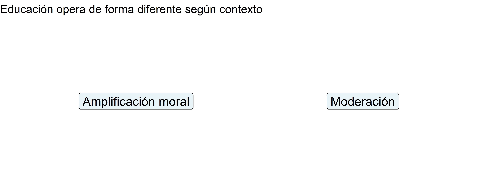
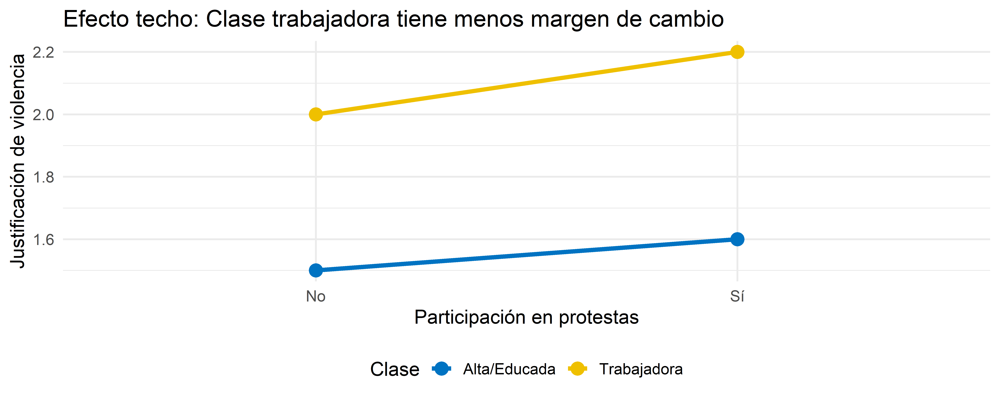
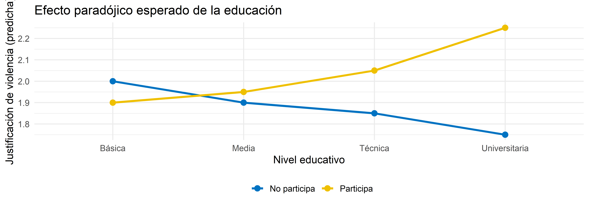
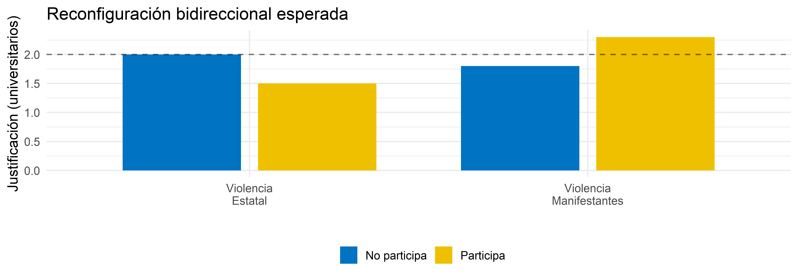
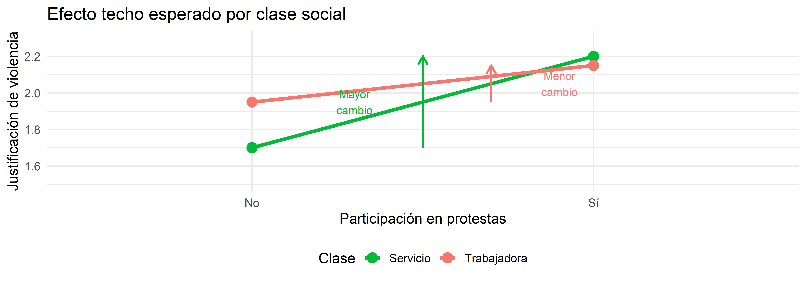
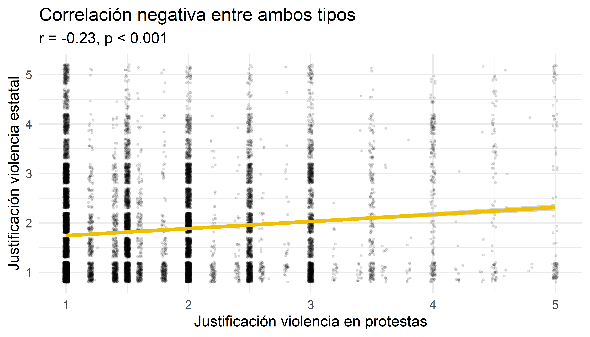
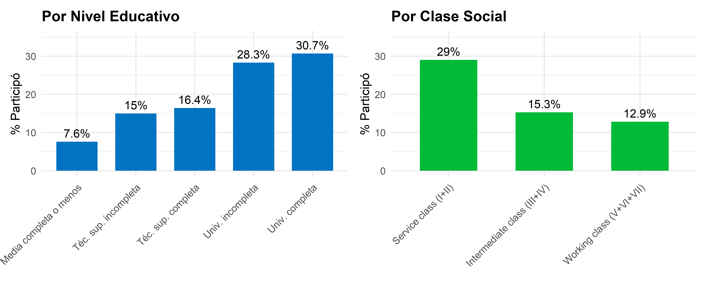
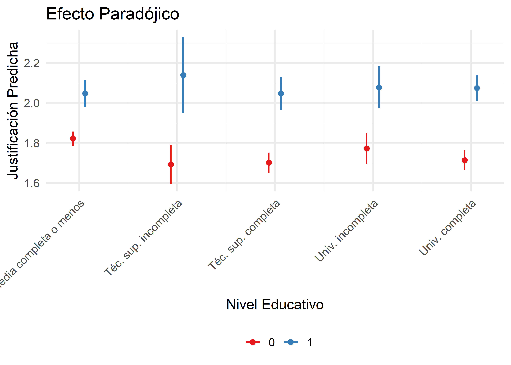
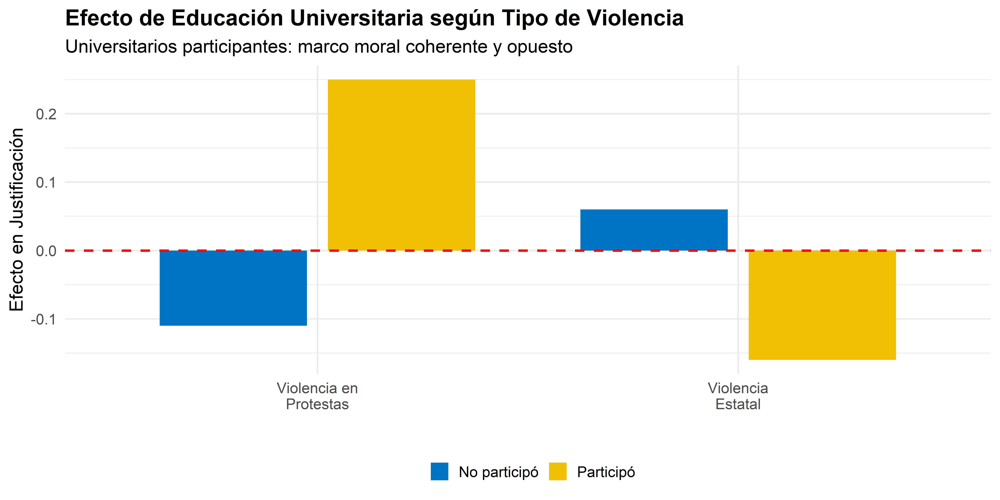
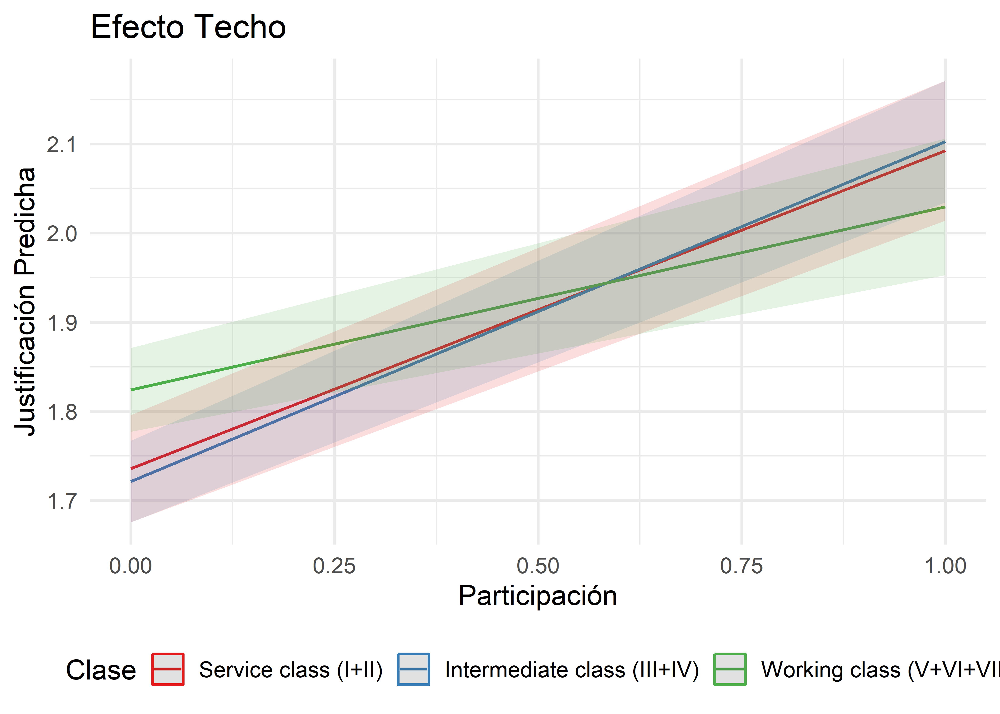

Educación, Clase y Legitimidad de la Violencia Política
Un análisis longitudinal
René Canales
Pontificia Universidad Católica de Chile
12 de noviembre, 2025
Introducción
El contexto: 18 de octubre de 2019
La “primavera chilena”
- Evasión masiva del metro → movilización nacional
- Acontecimiento más impactante desde el retorno a la democracia
- Masividad, transversalidad social y repertorios confrontacionales
- Marchas multitudinarias, bloqueos, enfrentamientos
Represión estatal sin precedentes
- Estado de emergencia y militarización
- Más de 8.000 víctimas de violencia policial
- Más de 400 casos de trauma ocular
- Crisis de derechos humanos más grave desde la dictadura
Pregunta central
¿Cuándo, y para quién, la violencia política resulta legítima?
El problema de investigación
La justificación de la violencia no fue homogénea durante el estallido
Manifestantes más intensivos (jóvenes, educados, de izquierda) tendían a justificar más la violencia en protesta
Patrón contraintuitivo: literatura clásica asocia educación con tolerancia y rechazo a la violencia
¿Cómo explicar que los sectores más educados mostraran mayor disposición a justificar la violencia?
El problema teórico
Limitación de la literatura: modelar efectos de educación y clase como lineales, estables y universales, sin considerar que son contingentes al contexto de acción
Limitaciones de la literatura tradicional
Supuesto clásico (Verba, Schlozman & Brady, 1995)
- Participación depende del acceso a recursos (educación, tiempo, dinero)
- Sectores favorecidos → actitudes más convencionales
- Problema: Deja fuera la participación como experiencia transformadora
Limitación conceptual
- Literatura privilegia mediciones agregadas
- No captura cómo las posiciones de clase estructuran:
- Experiencias de injusticia
- Exposición a coerción
- Acceso a recursos interpretativos
Nueva perspectiva
- Participación política es transformadora, no solo reflejo de predisposiciones
- Efectos de educación y clase son condicionales al contexto
- Mecanismos situados y diferenciados por posición estructural
Pregunta de investigación
¿Cómo interactúan la educación, la clase social y la participación en protestas para moldear actitudes hacia la violencia política en Chile?
Argumento central
Los efectos de educación y clase sobre actitudes hacia la violencia son condicionales a la participación en protestas, operando mediante mecanismos diferenciados:
- Efecto educativo condicional: Educación como amplificador cognitivo
- Reconfiguración moral: Distinción normativa entre tipos de violencia
- Moderación de clase: Tolerancia basal y potencial de cambio
Objetivos de la investigación
Objetivo General
Analizar cómo la educación, clase social y participación en protestas interactúan para moldear actitudes hacia la violencia política durante el estallido social chileno
Objetivos Específicos
Examinar el efecto condicional de la educación según participación en protestas
Analizar la reconfiguración bidireccional de marcos morales (violencia de protesta vs. violencia estatal)
Evaluar cómo la clase social modera los efectos de la participación
Contribuciones del estudio
Tres campos de literatura
Educación y actitudes políticas: El “efecto civilizatorio” es condicional y depende del contexto participativo
Participación y socialización: Los efectos no son uniformes, sino que interactúan con la estratificación social
Desigualdad y conflicto: Traslada el enfoque de desigualdades horizontales a actitudes en contextos de protesta masiva
Bases sociales del estallido
Ilumina las bases sociales diferenciadas de la legitimación de la violencia
Explica la transversalidad del movimiento: transformación actitudinal de sectores profesionales
Muestra cómo la participación desarrolla marcos morales que legitiman formas selectivas de transgresión normativa
Antecedentes
Educación y actitudes políticas
Argumento clásico (Lipset, 1959; Almond & Verba, 1963)
- Educación fomenta internalización de normas democráticas
- Reduce propensión a aceptar violencia política
- Tres supuestos:
- Desarrolla habilidades cognitivas → posturas moderadas
- Promueve valores de tolerancia y pluralismo
- Fortalece eficacia política subjetiva
Problema
Presupone condiciones de igualdad estructural que raramente existen
En contextos de desigualdad estructural
- Educación puede dejar de ser promesa de integración
- Se convierte en recordatorio del carácter cerrado del sistema
- Los más educados pueden reformular el sentido moral de la violencia
Educación como herramienta de elaboración moral
- Permite articular narrativas más sofisticadas
- Marco de defensa de derechos, resistencia civil, desobediencia moral
- Resultado: relación curvilínea o condicional
Educación en contextos de crisis
La educación se convierte en amplificador moral:
- No elimina la violencia del horizonte político
- La reinscribe en un marco moralmente argumentado
- Vocabulario político, histórico y ético para reinterpretar
- “Violencia defensiva” o “resistencia legítima”
Mecanismo de activación: participación en protestas
De lo abstracto a lo situacional
La participación transforma actitudes mediante:
- Contacto directo con represión
- Experiencia corporal del conflicto
- Gas lacrimógeno, disparos, detención
- Activa marcos de “autodefensa legítima”
- Narrativas sofisticadas
- Violencia contra propiedad ≠ contra personas
- Violencia estructural vs. violencia de resistencia
- Requiere competencia cognitiva
Reconfiguración identitaria
- Solidaridad con compañeros manifestantes
- Experiencia de riesgo compartido
- Construcción de causa común
- “Compartimentalización cognitiva” (Tetlock, 1986)
Resultado
Violencia no como negación de democracia, sino como defensa circunstancial de su promesa traicionada
Participación como transformación
Modelo de recursos (Verba et al., 1995)
- Participación como reflejo de predisposiciones
- Actitudes son estables y previas a la acción
- Limitación: No explica transformación
Consecuencias biográficas del activismo (McAdam, 1989)
- Participación como experiencia socializadora
- Reconfigura orientaciones cognitivas, afectivas y morales
- “Laboratorio moral y cognitivo”
Freedom Summer (McAdam, 1989)
- Comparó voluntarios que participaron vs. “no-shows”
- Mismas motivaciones iniciales
- 20 años después: Diferencias persistentes en:
- Involucramiento político
- Identidad
- Trayectorias ocupacionales
Hallazgo clave
La participación dejó “huella indeleble” - no es episodio transitorio
Desigualdad estructural y clase social
Desigualdad estructural
Distribución jerárquica y persistente de recursos materiales, culturales y simbólicos
- No solo condiciona probabilidad de participar
- También condiciona formas de experimentar, interpretar y justificar la violencia
- Configura “universos de sentido diferenciados”
Bourdieu (1984)
Sistema de disposiciones duraderas que orienta la percepción de autoridad, justicia y conflicto
Clases medias/servicio
- Trayectorias de seguridad económica
- Socialización institucionalizada
- Violencia como disfunción
- Disposición pacifista normativa
Sectores trabajadores
- Subordinación estructural
- Inseguridad material
- Exposición constante a coerción
- Disposiciones más ambivalentes
- Violencia como prolongación de autodefensa
Distribución no simétrica (Lindh & McCall 2020)

Hipótesis
Hipótesis 1: Efecto paradójico de la educación
H1a: Efecto civilizatorio entre no participantes
Entre individuos que no participan en protestas, un mayor nivel educativo está asociado con menor justificación de la violencia (efecto civilizatorio clásico)
H1b: Inversión del efecto entre participantes
Entre individuos que sí participan, el efecto se invierte: personas con educación universitaria muestran mayor justificación de la violencia política que aquellas con menor nivel educativo

Hipótesis 2: Reconfiguración bidireccional
H2a: Mayor justificación de violencia de manifestantes
Universitarios que participan en protestas muestran mayor justificación de la violencia ejercida por manifestantes, en comparación con universitarios no participantes
H2b: Menor justificación de violencia estatal
Los mismos universitarios participantes muestran menor justificación de la violencia ejercida por el Estado, en comparación con universitarios no participantes

Hipótesis 3: Moderación por clase social
H3a: Mayor justificación basal en clase trabajadora
La clase trabajadora presenta una mayor justificación basal de la violencia política que la clase de servicio, independientemente de su nivel de participación en protestas
H3b: Efecto techo en clase trabajadora
El incremento en la justificación de la violencia asociado a la participación en protestas es menor para la clase trabajadora que para la clase de servicio (efecto techo)

Datos y Métodos
Estudio Longitudinal Social de Chile (ELSOC)
Características del estudio
- Encuesta panel representativa nacional
- Población adulta urbana de Chile
- Implementado por COES desde 2016
- Diseño longitudinal: seguimiento a los mismos individuos
Cobertura
- 7 olas de datos: 2016, 2017, 2018, 2019, 2021, 2022, 2023
- Muestreo probabilístico estratificado por conglomerados
- 1.067 manzanas censales
Muestra analítica
20,007 observaciones
anidadas en
3,666 individuos
Criterio de inclusión:
≥ 3 olas de participación
Atrición: ~40%
Retención: ~60%
Variables dependientes
Índice aditivo (α = 0.82) - Promedio de 5 ítems:
- Que trabajadores en huelga bloqueen calles
- Que estudiantes tomen colegios o universidades
- Que se tomen de forma violenta inmuebles
- Que se paralicen servicios de transporte con violencia
- Que se destruyan locales comerciales en manifestaciones
Escala: 1-5 (1 = Nunca se justifica, 5 = Siempre se justifica)
Índice aditivo (r = 0.58) - Promedio de 2 ítems:
- Que Carabineros use violencia para reprimir manifestación pacífica
- Que Carabineros desaloje a la fuerza personas que se toman edificios
Escala: 1-5 (1 = Nunca se justifica, 5 = Siempre se justifica)

Variables independientes principales
Educación
5 categorías:
- Media completa o menos (ref)
- Téc. superior incompleta
- Téc. superior completa
- Universitaria incompleta
- Universitaria completa
Clase Social (EGP)
3 categorías:
- Service class (ref)
(Profesionales, gerentes) - Intermediate class
(Empleados de rutina) - Working class
(Trabajadores manuales)
Participación
Variable dicotómica:
- 1 = Participó en manifestaciones (últimos 12 meses)
- 0 = No participó
Variables de control:
Edad, género, ideología, año
Estrategia analítica: Modelos multinivel
Ecuación general
Nivel 1 (intra-individual): \[y_{tj} = \beta_{0j} + \beta_1 X_{tj} + \varepsilon_{tj}\]
Nivel 2 (inter-individual): \[\beta_{0j} = \gamma_{00} + \gamma_{01} Z_j + u_{0j}\]
Modelo integrado: \[y_{tj} = \gamma_{00} + \gamma_{01} Z_j + \beta_1 X_{tj} + u_{0j} + \varepsilon_{tj}\]
Especificación: GLMM con distribución gaussiana, enlace identidad, estimación REML
ICC (Modelos nulos)
Violencia en protestas
ICC = 0.229 (22.9%)
Violencia estatal
ICC = 0.240 (24.0%)
Tip
Valores sustanciales confirman interdependencia
Resultados
Estadísticos descriptivos: Educación
Viol. Protestas
|
Viol. Estatal
|
|||
|---|---|---|---|---|
| Educación | Participación | N | Media | Media |
| Media completa o menos | No participó | 8139 | 1.65 | 1.87 |
| Media completa o menos | Participó | 671 | 1.96 | 1.65 |
| Téc. sup. incompleta | No participó | 448 | 1.63 | 1.93 |
| Téc. sup. incompleta | Participó | 79 | 2.07 | 1.75 |
| Téc. sup. completa | No participó | 2267 | 1.57 | 1.90 |
| Téc. sup. completa | Participó | 446 | 1.96 | 1.59 |
| Univ. incompleta | No participó | 739 | 1.70 | 1.89 |
| Univ. incompleta | Participó | 292 | 2.08 | 1.52 |
| Univ. completa | No participó | 2192 | 1.60 | 1.96 |
| Univ. completa | Participó | 971 | 2.12 | 1.47 |
Patrón clave
Entre no participantes: educación ↓ → justificación ↓
Entre participantes: educación universitaria → mayor justificación
Estadísticos descriptivos: Clase Social
Viol. Protestas
|
Viol. Estatal
|
|||
|---|---|---|---|---|
| Clase Social | Participación | N | Media | Media |
| Service class (I+II) | No participó | 1391 | 1.60 | 1.95 |
| Service class (I+II) | Participó | 569 | 2.06 | 1.49 |
| Intermediate class (III+IV) | No participó | 4085 | 1.59 | 1.87 |
| Intermediate class (III+IV) | Participó | 739 | 2.05 | 1.58 |
| Working class (V+VI+VII) | No participó | 3878 | 1.70 | 1.86 |
| Working class (V+VI+VII) | Participó | 572 | 1.99 | 1.55 |
Convergencia entre clases
Clase trabajadora: alto nivel basal, menor cambio al participar
Clase servicios: bajo nivel basal, mayor cambio al participar
Distribución de participación

Evolución temporal 2016-2023

H1: Modelo de interacción Educación × Participación
| Variable | Coef | SE | Sig | |
|---|---|---|---|---|
| educ_cat_unorderedUniv. completa | Univ. completa | -0.107 | 0.025 | *** |
| protesta_dummy | Participó | 0.226 | 0.033 | *** |
| educ_cat_unorderedUniv. completa:protesta_dummy | Univ. comp. × Participó | 0.135 | 0.045 | ** |
Interpretación:
- No participantes: -0.11
(efecto civilizatorio) - Participantes: -0.11 + 0.36 = +0.25
(inversión del efecto)

H1 confirmada
Educación reduce violencia solo entre observadores; entre participantes, la educación amplifica la justificación
H2: Reconfiguración bidireccional

| Protestas | Estatal | |
|---|---|---|
| Univ. inc. | -0.05 | 0.04 |
| (0.04) | (0.05) | |
| Univ. comp. | -0.11*** | 0.06 |
| (0.02) | (0.03) | |
| Protesta | 0.23*** | -0.04 |
| (0.03) | (0.04) | |
| Univ. inc. × Prot. | 0.08 | -0.16* |
| (0.06) | (0.08) | |
| Univ. comp. × Prot. | 0.13** | -0.18*** |
| (0.05) | (0.05) | |
| SD (Observations) | 0.70 | 0.84 |
| Num.Obs. | 15112 | 15103 |
| AIC | 34474.9 | 40370.3 |
H2 confirmada
Participación genera reconfiguración bidireccional coherente: legitima violencia táctica, deslegitima violencia represiva
H3: Modelo de interacción Clase × Participación
| Variable | Coef | SE | Sig | |
|---|---|---|---|---|
| protesta_dummy | Participó | 0.357 | 0.04 | *** |
Interpretación:
- Service class: +0.36 al participar
- Working class: +0.36 - 0.15 = +0.21
- Convergencia entre clases

H3 confirmada
Clase determina intensidad del cambio: Service class experimenta mayor transformación; Working class muestra efecto techo
Síntesis de resultados
H1: Efecto Paradójico ✓
Educación reduce violencia entre no participantes, pero la amplifica entre participantes universitarios
Mecanismo: Sofisticación cognitiva como amplificador moral contextual
H2: Reconfiguración Bidireccional ✓
Universitarios participantes desarrollan marco moral coherente: legitiman violencia de protesta, deslegitiman violencia estatal
Mecanismo: Transformación de marcos normativos mediante experiencia
H3: Moderación por Clase ✓
Working class: alta justificación basal, menor cambio
Service class: baja justificación basal, mayor cambio
Mecanismo: Efecto techo y habitus de clase
Discusión y Conclusiones
Hallazgos principales
El “efecto civilizatorio” es condicional
- En contextos de estabilidad: educación → moderación
- En contextos de movilización: educación → amplificación cognitiva
Importante
La educación no inmuniza contra la violencia, sino que proporciona herramientas para legitimarla estratégicamente cuando se percibe como moralmente necesaria
La protesta como laboratorio moral
- No es mera expresión de actitudes previas
- Genera reconfiguración bidireccional de marcos normativos
- Especialmente potente entre sectores educados
Importante
La participación activa universitarios “observadores moderados” en “críticos activos” del orden establecido
La clase social estructura el potencial transformador
- Working class: predisposición estructural estable
- Service class: mayor margen de transformación
Importante
La convergencia entre clases explica la transversalidad del movimiento del estallido social
Contribuciones teóricas
Literatura sobre Educación
Desafía el modelo lineal
- Efecto civilizatorio NO es universal
- Educación opera como amplificador contextual
- Depende de experiencia participativa
Literatura sobre Participación
Confirma consecuencias biográficas
- Participación transforma actitudes
- Efectos son socialmente estratificados
- Interacción con capital cultural
Literatura sobre Desigualdad
Nueva perspectiva micro
- De agregados a mecanismos situados
- Habitus de clase y experiencias diferenciadas
- Potencial de cambio estructuralmente condicionado
Implicaciones sustantivas para Chile
- Transversalidad del estallido tiene bases estructurales
- No solo “efecto contagio” o “manipulación”
- Transformación actitudinal real de sectores profesionales
- Desarrollo de marcos morales alternativos
- Polarización post-estallido es resultado de trayectorias diferenciadas
- Participantes vs. no-participantes desarrollaron universos morales distintos
- Especialmente marcado entre sectores educados
- Crisis de legitimidad institucional
- Violencia estatal perdió legitimidad entre sectores movilizados
- Reconfiguración profunda de la relación ciudadanía-Estado
- Desafío para la cohesión social
- Marcos morales irreconciliables sobre violencia legítima
- Necesidad de procesos de justicia transicional
Conclusión
El estallido social chileno reveló una transformación profunda en las bases morales de la acción política
La educación no es una barrera universal contra la violencia política, sino un recurso ambivalente que puede legitimar formas selectivas de transgresión cuando se perciben como moralmente necesarias
La participación en protestas no solo refleja actitudes previas, sino que las transforma, generando marcos morales alternativos que reconfiguran los límites de la acción legítima
La clase social estructura estos procesos, determinando tanto los puntos de partida como el potencial de cambio, resultando en una convergencia paradójica que explica la transversalidad del movimiento
El resultado es una polarización profunda entre participantes y no-participantes, especialmente entre sectores educados, que desarrollaron universos morales irreconciliables sobre la legitimidad de la violencia política
¡Muchas gracias!
René Canales
renejcanales@uc.cl
Programa de Doctorado en Ciencias Sociales
Pontificia Universidad Católica de Chile